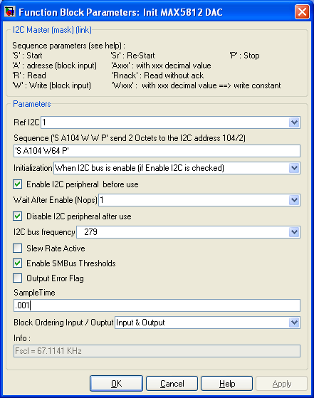

| |
Input driver for I2C Peripheral

Description
Provide acces to the I2C peripheral of the dsPIC (when available). The I2C bus sequence depends on the component being addressed. This sequence is configured very quickly with the 'sequence' parameter. The number of input and the number of output of the block is modified in order to match the sequence specification.
Dialog Box

-
use either I2C 1 or I2C 2 if the dsPIC has two distinct I2C peripheral
-
Sequence
-
Specify the I2C bus sequence. The sequence is enterred as text, between single quote 'xxx'.
-
S : generate a start condition on the bus
Sr : generate a re-start condition on the bus
P : generate a stop condition on the bus
A and Axxx : send the address of the component of the bus. If followed by a decimal number (like A104) this number is taken as the address. Otherwise, a block input appear noted A1
W and Wxxx : write a data of type uint8 on the bus. If followed by a decimal number (like W82) this number is taken as the data being written. Otherwise, a block input noted W1 appears.
R and Rnack : Read a data of type uint8 on the bus. R generate an acknowledge. Rnack do not generate the acknowledge. A block output noted R1, R2 ... Rn appears for each R or Rnack present in the sequence.
Example of sequence : 'S A125 W R R P'
-
Initialisation
-
Define when the I2C peripheral is configured :
- When PIC is initialized (only once)
- When I2C bus is enable (if Enable I2C is checked)
- Both
- None
For simple schematic, use the first item.
-
Enable I2C peripheral before use
-
Enable or Re-enable the I2C peripheral.
for simple model, the I2C bus is never disabled, this option can be unchecked.
-
Wait after enable
-
Place a number or No OPerating (nop) instruction after re-enabling the I2C BUS. This is to avoid problems du to fast transition.
-
Disable I2C peripheral after use
-
to disable the I2C peripheral after use.
-
I2C bus frequency
-
Configure the I2C bus frequency. The I2C bus frequency Fscl is updated in the info part of the dialog each time this parameter is modified.
-
Slew rate active
-
Activate Slew rate
-
Enable SMB bus threshold
-
Enable SMB bus threshold
-
Output Error flag
-
Add an output to the block. This output will output 0 if no error occurs. 1 otherwise.
-
Sample Time
-
Sample time of the block. -1 for inherited
-
Block Ordering Input / Output
-
If you want to force the execution order of blocks that are not connected, this option allow to add either an input, an output or both to the block. These virtual connection allow to force the ordering of the blocks.
-
Info
-
Information, give the clock frequency Fscl of the I2C bus.
|
The Microchip name PIC, dsPIC, and MPLAB are
registered trademarks of Microchip Technology Inc.
MATLAB, Simulink, and Real-Time Workshop are
registered trademarks of The MathWorks, Inc.
| Lubin Kerhuel 's Website |
Contact : [adresse e-mail retirée] |
|
|